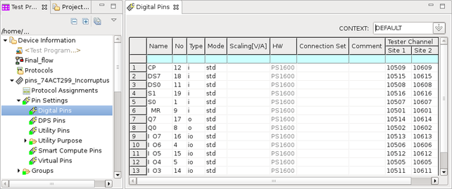

Pin setting editors
The pin information is entered in the pin configuration area of the corresponding Pin setting editor. The digital pins editor also contains the context information.
There are the following types of pin setting editors:
For multi-site testing, the tester channels for all the sites are displayed in the pin setting editors.
In this section, the parameters in the pin configuration area of each pin setting editor are
explained.

Functional changes
- Introduced before SmarTest 6.3.2
- SmarTest 6.5.0: Added digital pins editor, analog pins editor, DPS pins editor, and utility pins editor.
- SmarTest 6.5.0: The site text box removed. For multi-site testing, the tester channels for all the sites are displayed in the pin setting editors.
- SmarTest 7.1.3: Move utility purpose editor to Pin Settings.
- SmarTest 7.3.1: New "Connection Set" column in the Digital Pins editor.
- SmarTest 7.10.2: New "Scaling..." column in the Digital Pins editor.